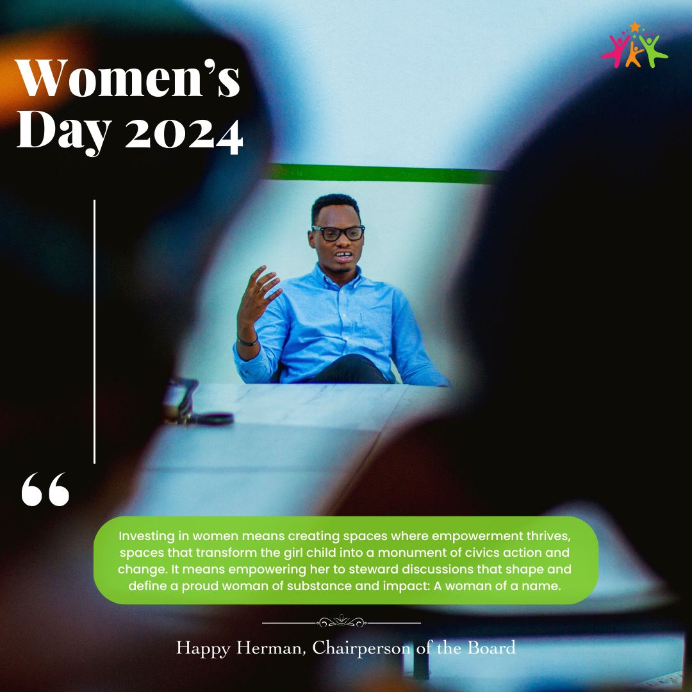
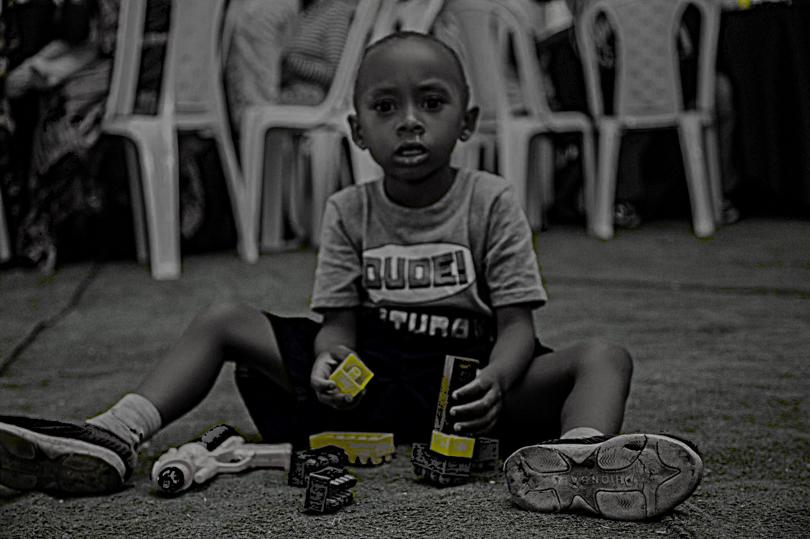

This moment seems to symbolize resilience and the power of
joy amidst challenges, which is a reflection of how
organizations like the Street Bridge Foundation aim to
bring happiness, hope, and a brighter future to vulnerable
children. Their laughter becomes a testament to the enduring
spirit of childhood, even in tough circumstances.

The quote beside him emphasizes the foundation's belief in
creating spaces where women and girls can thrive,
transforming them into "monuments of civic action and
change." Herman stresses the importance of guiding and
supporting girls to take part in shaping discussions that
will have a lasting impact on society. His role in
championing this vision likely reflects the foundation's
larger goals of involving both children and their parents
in community growth and empowerment.

Through such initiatives, the foundation seeks to build a
solid foundation for future problem solvers and innovators,
empowering children to use their natural curiosity to learn
about technology, engineering, and problem-solving at an
early age.